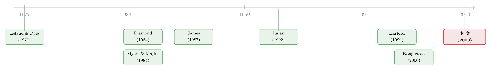

并购的钱从哪儿来：当一笔银行贷款替收购方做了「背书」
本文读的是 Bharadwaj & Shivdasani (2003, Journal of Financial Economics)：在 1990–1996 年的 115 起现金要约收购里，由银行【全额】出资的那一批，收购方在公告日录得显著为正的超额收益（两日 2.08%、三日 4%），而全靠自有现金的那批收益却几乎为零。换句话说，决定股价反应的，可能不是「拿什么付钱」，而是「钱从谁那里借来」。
1 一个被问错了的问题
并购里有一个几乎写进教科书的「常识」：收购方股东大多赚不到钱。无数事件研究反复确认，现金要约收购 (cash tender offer) 中收购方的平均超额收益接近于零，换股收购里更是显著为负。于是人们把注意力都放在了支付方式 (method of payment) 上——是用现金，还是用股票？
这是一个被问了几十年的问题。但 Bharadwaj 和 Shivdasani 的这篇文章，从一开始就提了一个不太一样的问题：在那些清一色用现金支付的收购里，这笔现金本身又是从哪儿来的？
听上去像是吹毛求疵。可你只要稍稍停下来想一想，就会发现这两件事完全不是一回事。同样是一手交钱一手交「公司」，一家收购方可能是掏出账上趴着的闲钱，另一家则可能是临时跑到银行借了一大笔。在外部投资者眼里，这两种「现金」会一样吗？
文章的核心主张，正是建立在这个分叉上：支付方式相同（都是现金），融资来源不同（自有现金 vs. 银行贷款），市场的反应会截然不同。 而且，差别还不小。
2 为什么「钱从谁那里借」会是一件大事
要理解这个分叉，得先回到信息不对称 (information asymmetry) 这个老主题上。
按照受到广泛接受的中介理论，银行之所以存在，是因为它在收集和评估信息上有天然优势，是连接企业与外部资本市场的一座桥（Leland and Pyle, 1977; Diamond, 1984）。现在设想一家公司想做一笔正净现值 (positive NPV) 的收购。问题在于，市场未必这么看——按照 Jensen (1986) 的自由现金流逻辑，收购公告很容易被解读成管理层在追求规模扩张这类私人利益，于是股价下跌。管理层为了躲开这个下跌，甚至可能干脆放弃这笔本来该做的收购。（关于这条逻辑的渊源，可参见《现金为什么一定要「还」出去？——四十年后，重读 Jensen 的自由现金流》。）
那么，谁能打破这个僵局？一个掌握内部信息的知情投资者——比如银行——可以。理论文献给出了两条渠道：
- 筛选 (screening)。在 Boyd and Prescott (1986) 和 Diamond (1991) 里，银行会筛掉差项目、只给好项目放款。于是银行肯出钱这个动作本身，就向市场释放了一个关于项目质量的正面信号——这就是认证 (certification) 效应。James (1987)、Lummer and McConnell (1989) 以及 Billett et al. (1995) 都发现，公司宣布拿到银行贷款时股价上涨，正与这个故事吻合。
- 监督 (monitoring)。在 Diamond (1984) 里，银行用信息优势盯着借款人是否遵守贷款契约，一旦违约就重新谈判。这种「随时会被收紧条款」的前景，逼着管理层不敢乱投资。于是银行债务相当于给收购方装了一道纪律约束。
但故事还有另一面，而且这一面同样有理有据。Rajan (1992) 指出，银行的信息优势可能反过来伤害股东：信息垄断会让银行攫取一部分剩余，削弱企业追求股东价值的动力。Weinstein and Yafeh (1998) 发现，与银行关系紧密的日本企业反而承担了更高的借款成本；Kracaw and Zenner (1998) 发现，当银行高管坐进借款公司董事会时，贷款公告对应的是显著为负的收益。更进一步，作为债权人的银行，利益本就和股东未必一致——它可能更偏好那些能降低现金流波动、从而抬高债权价值的多元化收购，哪怕这类收购对股东是亏的。Kroszner and Strahan (2000) 关于「银行家进董事会」的证据，说的也是这种创建—股东利益冲突。
所以在动笔之前，理论本身就是分裂的：银行融资到底是给收购背书（认证 + 监督），还是在绑架股东（攫取剩余 + 偏向债权人）？这恰恰是一道留给数据去裁决的实证问题。
接着，一个自然的问题是：到底该去哪里找这样一个能把两种力量分开的实验场？
3 为什么是「现金要约收购」
作者选择了现金要约收购，理由相当讲究。
第一，并购的细节披露得既及时又完整，是观察银行如何影响企业投资决策的天然舞台。第二——也是最关键的——要约收购里有一份监管强制的披露文件：14D-1 申报书。根据 1933 年《证券法》和 1934 年《证券交易法》的 Regulation S-K，收购方必须披露完成交易所需资金的来源。这就把通常藏在公司财务黑箱里的「这笔钱从哪来」，明明白白地摆到了桌面上。
作者用三套来源交叉核对融资信息：14D-1 申报书（最可靠，但只在 69 起交易里有）、SDC 数据库、以及在 Lexis-Nexis 和 Dealscan 里搜来的融资披露。文中举的例子很生动：洛克威尔 (Rockwell) 收购 Reliance Electric 时，14D-1 里写的是「打算向一组银行借入循环信贷」，而后续的修正文件确认了贷款确实落地——于是这笔交易被归类为「内部现金 + 银行债」混合融资。
之所以只看现金要约、不看普通合并 (merger)，是因为合并大多用股权融资，而作者要识别的恰恰是「用银行债融资的收购」的独特之处。最初有 152 起交易满足筛选条件（收购方非公用事业/金融业、买卖双方都在三大交易所上市、CRSP 有至少 200 天日收益、COMPUSTAT 有前一财年数据），最终能确定融资来源的是 115 起。
4 数据告诉我们：银行无处不在
第一组事实就有点出人意料。在这 115 起现金要约收购里：
- 银行参与了其中
81起（70%）的融资——这定义为PARTBANK = 1； - 银行全额出资的有
40起（35%），这是ONLYBANK = 1，竟是最常见的单一融资方式； - 完全靠内部现金完成的只有
26起（22%）。
换句话说，「掏自己腰包做收购」远不是常态，反倒是少数派。在用到银行债的 81 起里，31 起动用的是既有贷款，14 起是对既有贷款的修订，36 起是全新的信贷协议。
更有意思的是借款的规模。银行贷款平均高达 $1.25 billion，中位数 $350 million；贷款额与交易额之比平均是 7.66、中位数 1.56——也就是说，企业从银行借的钱，往往远远超过这笔收购本身的需要。原因有二：一是 Dealscan 的细颗粒数据显示，这些贷款常常一笔多用（收购 + 偿债 + 商业票据备用 + 一般公司用途）；二是很多收购靠的是既有的授信额度，而额度本就比单笔收购大得多。此外，几乎所有样本公司在收购前就已经背着银行债——93 家里有 91 家（97.9%）持有银行债，平均额度 $916.5 million，约相当于收购前一年股权市值的 25%。这与 Houston and James (1996) 的发现一致：银行始终是美国企业的主要资金来源。
5 谁会去找银行？——融资选择的决定因素
然后，一个自然的问题是：什么样的收购方更可能去找银行？作者用一组收购方与交易层面的特征做了 Probit 回归。这里的逻辑很关键：如果银行是在为债权人谋利，那银行融资应当更多出现在对债权人有利的交易里；如果银行是在监督，那它应当与对股东有利的特征绑定。
几个核心变量与结论：
- 现金充裕度 (ACASH) 与 相对规模 (RELSIZE)。Myers and Majluf (1984) 预言财务宽裕 (financial slack) 会替代外部融资，于是 slack 越少、交易相对越大，越需要银行债。数据正是如此：内部现金储备低、相对交易规模大的收购方，更倾向于银行融资。
- 收购方前期股价表现 (ARETURN)。Hadlock and James (1998) 论证，当公开市场融资条件不利时，企业转向银行。文章发现，前期股价表现差的收购方，更可能用银行债。
- 股价波动率 (STDDEV)。同样按 Hadlock and James (1998)，越难估值的公司越倾向于找一个知情的内部贷款人，于是波动率与银行融资正相关。
但反过来，那些「本该为债权人量身定做」的特征却没有出现。银行债在多元化 (diversifying) 收购和相关 (related) 收购里出现的概率相当；银行也并不回避高成长目标的收购（TGTMB）。也就是说，看不到「银行专挑能降低现金流波动、抬高债权价值的多元化收购」这种自利证据。
这一步很重要：选择融资方式的画像，已经先把「银行在绑架股东」的故事削弱了一半——银行的钱流向的是缺现金、表现差、难估值的公司，而不是流向对债权人特别有利的交易。
6 反转：被银行「全包」的收购，股价涨了
但真正关键的一步，在于公告日的市场反应。
作者计算收购方在公告窗口的累计超额收益 (cumulative abnormal return, CAR)，然后按融资来源分组。结果是这篇文章的灵魂：
- 银行全额融资（ONLYBANK） 的收购：两日 CAR 平均
2.08%、三日 CAR 平均4%，统计上显著为正； - 完全内部融资 的收购：两日 CAR 平均
−0.32%、三日0.54%，统计上不显著，基本是零。
于是反转出现了。在一个「收购方平均赚不到钱」是铁律的领域里，居然有一整类收购——由银行全额出资的那类——让收购方股东显著获益。而且这不是个别极端值：在多元回归里，公告收益与银行融资的程度正相关。作者为此构造了两个连续度量：BANKPCT（银行债占交易融资的比例，全样本均值约 59%）和 LOANAMT（银行债额 / 收购方股权市值，均值 0.60）。银行出的钱越多，市场越买账。
这就把前面那个被问错了的问题彻底掰正了：在支付方式（现金）完全相同的前提下，融资来源单独地、显著地解释了股价反应的差异。
7 到底是哪一种「好」？——五个候选解释
接着，作者做了一件很扎实的事：把「为什么市场对银行融资的收购反应正面」这件事，拆成五个互相竞争的解释，逐一过堂。
- 能发起要约本身就说明收购方财务健康——一个关于发起人财务状况的正面信号；
- 能拿到银行融资，说明银行看好这家公司的前景——认证效应；
- 用风险较低的银行债（而非股权）融资，说明股权没被高估——这是 Myers and Majluf (1984) 式的逆向信号；
- 管理者能力同时驱动了融资结构和市场反应——能干的经理做好收购，而银行也更愿意借钱给能干的经理；
- 监督预期——市场预期银行债的纪律约束会管住经理，从而带来更赚钱的收购。
如何在这些解释之间做切割？作者的关键证据是横截面异质性：银行融资收购的正向 CAR，主要集中在业绩差和信息不对称高的收购方身上。这个模式恰恰是认证 + 监督故事最该预言的——对那些市场本来最看不清、最不信任的公司，一个知情银行的背书与盯防才最有价值。
与此同时，几个「坏故事」的预言都落空了：市场反应不取决于用的是既有贷款还是新贷款；银行债合同里确实塞满了限制经理未来投资的契约条款，但作者没有发现银行债在「信息垄断本该最严重」的情形下变得有害。综合来看，证据最支持的是——银行在主动监督并认证收购质量，而非扭曲企业的投资政策。
作者诚实地点出一个警告：样本里全是成功拿到融资的公司。如果某些公司在银行拒贷后干脆取消了收购，那这些「被否掉的收购」我们根本观察不到，而这种幸存者问题对小收购方最严重。但有意思的是，文章发现银行融资的正向 CAR 对小收购方反而更大，于是作者判断这个偏差不太可能严重扭曲结论——尽管推广时仍需谨慎。
8 文献脉络
把这篇文章放回它生长的那条藤上，脉络就清晰了。
最上游是金融中介理论：Leland and Pyle (1977) 和 Diamond (1984) 奠定了「银行因信息优势而成为外部资本市场之桥」的基础；Myers and Majluf (1984) 则给出了「信息不对称下企业偏好内部资金、其次低风险债务」的融资排序逻辑。沿着这条线，一支文献专门检验「银行贷款是否独特」——James (1987)、Lummer and McConnell (1989)、Billett et al. (1995) 用贷款公告的正向股价反应，为认证/监督假说积累了证据。

与此并行的，是一支「银行未必是好人」的反向文献：Rajan (1992) 的信息垄断、Weinstein and Yafeh (1998) 的日本高借款成本、Kroszner and Strahan (2000) 的创建—股东冲突。两支文献在这篇文章里正面交锋。
而在并购这一侧，最直接的邻居是 Harford (1999)：他发现现金充裕的收购方更容易做毁损价值的收购。本文恰好补上了另一半——正是这类现金充裕的公司，最不需要、也最少寻求银行融资。两者合起来讲了一个完整的故事：过多的财务宽裕之所以对股东有害，正因为它让企业躲开了银行这类知情中介的监督。Kang et al. (2000) 用日本数据发现与主办银行关系密切的企业做的收购更增值，与本文遥相呼应；但无论 Harford 还是 Kang，都没有直接打开「收购的融资来源」这个箱子。本文的贡献，正是第一次把估值效应与收购的融资来源直接挂上钩。
（顺带一提，关于企业在银行债、非银私募债与公开债之间如何取舍，可参见《信用最差的公司，到底去哪儿借钱？》；关于「借公开债是为了躲开银行的眼睛」这层逆向逻辑，可参见《借公开债，是为了躲开银行的眼睛》。）
9 评论与延伸（Q&A + 研究方向）
(a) 几个可能的疑问
Q：这和「支付方式」研究到底有什么本质区别？
支付方式问的是「用现金还是用股票」，而本文问的是「在都用现金的前提下，这笔现金是自有的还是借来的」。前者混杂了股权高估的信号；后者把支付方式固定住（全是现金），单独识别出融资来源的作用。这正是本文能从一个老问题里榨出新结论的关键。
Q：正向 CAR 会不会只是「股权没被高估」的信号，跟认证/监督没关系？
这正是作者列出的第三个候选解释。但「股权高估信号」无法解释为什么正向 CAR 偏偏集中在业绩差、信息不对称高的收购方身上，也无法解释为什么 CAR 随银行融资比例单调上升。横截面模式更契合认证/监督，而非单纯的逆向信号。
Q：银行贷款额常常是交易额的好几倍（中位数 1.56、均值 7.66），那 BANKPCT 还可信吗？
这确实是度量上的难点。作者承认贷款常一笔多用、且很多来自既有授信额度，所以对部分融资的交易，
BANKPCT是按「银行债 /（银行债 + 现金 + 有价证券）」的比例近似估算的。为稳健，作者还另造了一个不依赖该假设的LOANAMT（银行债 / 股权市值），结论一致。
Q：幸存者偏差会不会把结论整个推翻？
风险在于：被银行拒贷而取消的收购观察不到，这对小公司最严重。但若这种偏差主导，被「筛剩下」的小收购方 CAR 应当更高（因为只有最好的才借到钱）才对——而作者发现小收购方的正向 CAR 确实更大，方向上与认证故事一致而非与纯选择故事矛盾。不过这仍是相关性论证，不能完全排除。
Q：会不会其实是「能干的经理」既拿到了贷款又做了好收购，银行只是搭了便车？
这是第四个候选解释，本文无法彻底排除——管理者能力是个难以观测的混杂因素。作者只能用「正向反应集中于高信息不对称样本」来间接削弱它：如果只是能力在起作用，没理由偏偏在最难估值的公司里最强。这是本文识别上最软的一环。
Q：那银行债合同里那一堆限制性契约，算不算「有害」的证据？
作者发现银行债合同确实包含大量限制未来投资的契约条款，但这本身正是监督的体现，而非有害。真正能区分好坏的，是看银行信息垄断最严重时银行债是否变坏——而数据里看不到这种恶化。
(b) 几个可能的研究问题与提案
1. 把样本拉到公司债市场：发债融资的收购，市场怎么看？
【经济故事】本文比的是「自有现金 vs. 银行债」。但收购方还可以发公开债。公开债缺少银行的监督，却多了评级机构与债券持有人的定价。若认证/监督是关键，那「公开债融资的收购」CAR 应介于内部现金与银行债之间。 【可行性】高。SDC 并购 + Mergent FISD / TRACE 的债券发行数据可匹配收购方在公告前后的发债行为；识别上可比较银行债 vs. 公开债融资样本的 CAR，并控制信息不对称代理变量。
2. 外资银行 vs. 本地银行的认证差异。
【经济故事】如果银行的价值来自信息优势与监督，那对信息更难触达的外资银行，认证效应是否更弱？这能把「信息」从「资本供给」里剥出来。 【可行性】中。需要 Dealscan 的贷款人身份 + 跨境样本；难点在于外资行贷款样本量小、且选择性强（外资行往往只服务大客户）。
3. 银行债的「监督」在事后兑现了吗？——长期运营表现。
【经济故事】本文是事件研究，捕捉的是公告日预期。若市场对银行融资收购的乐观是理性的，这些收购的事后运营绩效（ROA、整合成功率）应当真的更好。这能检验认证是真信息还是噪声。 【可行性】高。COMPUSTAT 事后 3–5 年经营数据 + 倾向得分匹配；需小心收购后的会计可比性与剥离问题。
4. 信用周期对认证效应的调节。
【经济故事】Hadlock and James (1998) 暗示企业在公开市场不利时转向银行。那在信贷宽松 vs. 紧缩期，「银行肯出钱」这个信号的含金量是否不同？紧缩期银行肯放款，背书应当更强。 【可行性】中。需把样本期拉长、覆盖多个信贷周期（如纳入 2008、2020），用信贷标准调查 (SLOOS) 或贷款利差作为周期代理；与本文 1990–1996 的短样本相比，时变识别更可信。
5. 流动性视角：银行融资收购方的债券/股票流动性。
【经济故事】若银行债承担了监督与认证，是否也降低了收购方的信息不对称，从而收紧其证券的买卖价差？这把本文与信用市场流动性文献接上。 【可行性】中。需 TRACE（债券）或 TAQ（股票）的高频报价数据，事件窗口内对比融资来源分组的价差变化；难点是收购事件对流动性的冲击本身复杂，需谨慎设计窗口。
10 我的判断
这篇文章最漂亮的地方，是问题的重新框定：在一个被「支付方式」统治了几十年的领域里，它把刀切向了「融资来源」这个被忽略的维度，并且用一个干净的制度安排（14D-1 强制披露）拿到了别处拿不到的数据。2.08% vs. −0.32% 这个对照，简洁、有冲击力，且方向与认证/监督理论吻合。它和 Harford (1999) 拼起来的那句话——「财务宽裕之所以有害，是因为它让你躲开了银行的监督」——尤其有说服力。
但识别上的担忧也很实在。其一是内生性：找不找银行、做不做好收购，可能都由同一个看不见的「管理者能力/项目质量」驱动，事件研究本身无法把银行的因果贡献从这种自选择里干净地剥离出来。其二是幸存者偏差，作者已坦诚，并用「小公司 CAR 更高」做了间接辩护，但这终究是旁证。其三是样本太短太小：115 起、集中在 1990–1996，既无法覆盖信贷周期的起落，也让横截面切分后的子样本相当单薄。
后续我最想看到的，是把这个设计搬到今天更丰富的数据上去：用 Dealscan/TRACE 把「融资来源」细分到银行债、公开债、私募债，看认证效应是否随贷款人的信息能力单调变化；再用事后运营绩效去检验，公告日那 4% 的乐观，到底是真信息，还是市场一时的错估。如果它经得起这些检验，那么本文的核心洞见——在并购里，钱从谁那里借来，本身就是一条信息——就值得被写进教科书的下一版。
参考文献
Billett, M. T., Flannery, M. J., Garfinkel, J. A. (1995). The effect of lender identity on a borrowing firm's equity return. Journal of Finance 50, 699–718.
Boyd, J. H., Prescott, E. (1986). Financial intermediation and coalitions. Journal of Economic Theory 38, 211–232.
Diamond, D. (1984). Financial intermediation and delegated monitoring. Review of Economic Studies 51, 393–414.
Diamond, D. (1991). Monitoring and reputation: the choice between bank loans and directly placed debt. Journal of Political Economy 99, 689–721.
Hadlock, C., James, C. (1998). Bank lending and the menu of financing options. Unpublished working paper, University of Florida.
Harford, J. (1999). Corporate cash reserves and acquisitions. Journal of Finance 54, 1969–1997.
Houston, J., James, C. (1996). Bank information monopolies and the mix of private and public debt claims. Journal of Finance 51, 1863–1889.
James, C. (1987). Some evidence on the uniqueness of bank loans. Journal of Financial Economics 19, 217–235.
Jensen, M. C. (1986). Agency costs of free cash flow, corporate finance and takeovers. AEA Papers and Proceedings 76.
Kang, J. K., Shivdasani, A., Yamada, T. (2000). The effect of bank relation on investment decisions: evidence from Japanese takeover bids. Journal of Finance 55, 2197–2218.
Kroszner, R., Strahan, P. (2000). Bankers on boards: monitoring, conflicts of interest, and lender liability. Journal of Financial Economics 62, 415–452.
Leland, H., Pyle, D. (1977). Information asymmetries, financial structure, and financial intermediation. Journal of Finance 32, 371–387.
Lummer, S. L., McConnell, J. J. (1989). Further evidence on the bank lending process and the capital market response to bank loan agreements. Journal of Financial Economics 25, 99–122.
Morck, R., Shleifer, A., Vishny, R. W. (1990). Do managerial objectives drive bad acquisitions? Journal of Finance 45, 31–48.
Myers, S. C., Majluf, N. S. (1984). Corporate financing and investment decisions when firms have information that investors do not have. Journal of Financial Economics 13, 187–221.
Rajan, R. (1992). Insiders and outsiders: the choice between informed and arms' length debt. Journal of Finance 47, 1367–1400.
Weinstein, D., Yafeh, Y. (1998). On the costs of a bank-centered financial system: evidence from changing main bank relationships in Japan. Journal of Finance 53, 635–672.